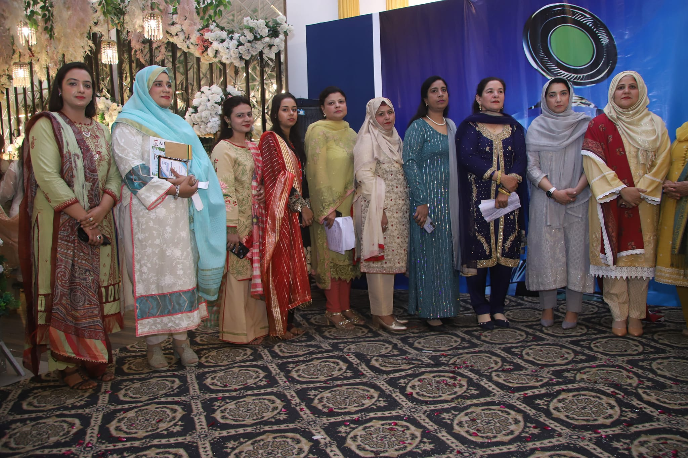

Once upon a time, in a land filled with textbooks and homework, a girl named Rania was born on October 29th. Legend has it that her first words were, "Do I really have to study?" From that moment on, she became known as the clever, naughty, and delightfully mischievous student who could charm her way out of anything—even homework!

As Rania made her way through school, she quickly discovered that her true talents lay not in math or science, but in the fine art of dodging responsibility. Her report cards were a colorful array of D’s and F’s, which she proudly displayed on her fridge. To Rania, a “bad” mark was merely a sign of her artistic expression. When it came time to pass her matriculation exams, Rania knew she had to think outside the box. With a wink and a grin, she decided to embrace her inner entrepreneur. Armed with a few snacks and a persuasive smile, she offered the examiner a “special favor”—which, let’s be honest, was more like a bribe wrapped in candy. Miraculously, she squeaked through, much to the dismay of her more studious peers!
Rania then entered college, where she continued her shenanigans. Despite her lack of academic prowess, she somehow graduated and even thought about joining the army. After a grueling test, however, Rania realized she had "not enough merit" to move forward. Who knew a knack for mischief wouldn’t cut it in the military?
Click Here To See Result
Eventually, Rania became a teacher. Yes, you heard that right—a teacher! However, her past quickly caught up with her when her students, particularly the notorious duo, delighted in reminding her of her less-than-stellar academic career. Every day was a new opportunity for them to tease her about her colorful grades, with chants of, “Hey, Miss Rania! Need a tutor?”
Your Outstanding Personality
There’s a girl with a face so small that when she talks, it’s like watching a tiny TV on mute—cute, but you just can’t quite catch everything she’s saying! It’s fitting, really, because she’s all about big ideas coming from that little mouth—چھوٹا منہ بڑی بات!
 Standing at a height that’s more “fun-sized” than “tall,” she’s always throwing out lofty plans like she’s a CEO of Dreamland. And don’t get me started on her signature black and pink socks; they’re so bright that you need sunglasses just to look at them! But ask her for a good picture, and she’ll strike a pose that makes you wonder if she’s auditioning for a role in “Awkward Moments: The Musical.
Standing at a height that’s more “fun-sized” than “tall,” she’s always throwing out lofty plans like she’s a CEO of Dreamland. And don’t get me started on her signature black and pink socks; they’re so bright that you need sunglasses just to look at them! But ask her for a good picture, and she’ll strike a pose that makes you wonder if she’s auditioning for a role in “Awkward Moments: The Musical.
TIME WITH US
As we wrap up our time in eighth grade, I can't help but reflect on how
lucky we were to have you as our teacher. You stepped in just before
exams and turned our worries into excitement with your engaging lessons,
even when we couldn't resist annoying you with our antics. You assigned
loads of homework, and while we might have grumbled, your teaching
helped us excel in our papers. It was a bittersweet moment when you
didn’t follow us to ninth grade, replaced by a rather strict teacher.
Yet, many of us kept in touch with you, cherishing the fun we had, from
playful banter to late-night chats during summer holidays. We remember
the day we gave you that watch—
 it was just a small token of appreciation for all the joy you brought into our lives. As your birthday approaches
on October 29, I’ve been working on a special coding project just for
you. Despite the times I may have gotten frustrated, you always knew how
to bring a smile to my face. Thank you for being an incredible teacher
and a wonderful friend!
it was just a small token of appreciation for all the joy you brought into our lives. As your birthday approaches
on October 29, I’ve been working on a special coding project just for
you. Despite the times I may have gotten frustrated, you always knew how
to bring a smile to my face. Thank you for being an incredible teacher
and a wonderful friend!
Rania, the girl whose birthday falls on October 28th, has always believed that her birthdate makes her a little extra special—like a limited-edition Halloween candy nobody knew they wanted! Each year, she throws a party that’s part birthday bash, part costume contest, and all chaos. Ah, just another year of Rania’s